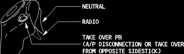

Side Stick
Transmit Switch
Transmit Switch operates as a press-to-talk switch for boom or oxygen mask microphones.
NEUTRAL - Boom and mask microphones are disconnected from transmission, although reception is normal. Switch is spring-loaded to neutral.
TRANSMIT - When selected, provides transmission on the radio selected by the Audio Control Panel (ACP) transmission button. If transmit is selected on the side stick when the ACP INT/RAD switch is set to INT, the transmit function has priority over the interphone function.
